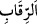
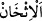
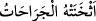
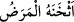
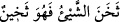
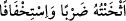
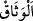
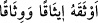

yollarıyla savaşsız olarak da “onlardan öc alırdı.” Ancak bunu dilemedi. “Fakat sizi
birbirinizle denemek için” size savaşı emretti. Kâfirlerle mücâhede ederek Allah’ın
vaadi mucebince büyük sevap kazanmanız için sizi onlarla, belki bazıları küfür ve
inkârından döner diye onları da sizinle denemek istedi. Yine sizin ellerinizle hak
ettikleri azabın bir kısmını peşin olarak onlara tattırmayı murad etti. “Allah, kendi
yolunda öldürülenlerin” Bedir, Uhud ve diğer savaşlarda şehit olanların “yaptıkları
işleri zâyi etmeyecektir” ve onları ödüllendirecektir.
Likâ; görmek, savaşmak ve ulaşmak demektir.
Râğıb şöyle demiştir: Lika, göz ve gönül ile his ve idrake denilir.
“İnkâr edenlerle karşılaştığınız zaman boyunlarını vurun.” Bu ifâdenin aslı,
“boyunlarına vurmak sûretiyle vurun” demektir. Burada fiil gizlenip masdar takdim
edildi. Ve fiil yerine mefule muzaf olarak masdar getirildi.  kelimesinin başındaki
“elif lam” izafetten bedel olarak getirildi. Ölümü en çirkin surette tasvir etmek için
ölümden boyunlarının vurulması olarak tâbir edilmiştir. Ki bu, boynun kesilip bedenin
başı, en yücesi, organların en güzel ve en önemlisi olan organın gövdeden ayrılıp
koparılmasıdır.
Aynı zamanda bu konuda gaziler en kolay olana irşad ve delâlet edilmiştir. Hadiste
şöyle buyrulmuştur: “Ben Allah’ın azabıyla azab etmek için gönderilmedim. Ben
ancak boyunları vurmak yahut esir almak üzere gönderildim.”
“Nihâyet onları iyice vurup sindirince bağı sıkıca bağlayın (onları esîr alın).
Ondan sonra artık ya lütfen bırakır veya karşılığında fidye alırsınız”
Keşşaf’ta şöyle denilmiştir:  (ishân), öldürme işini çok yapmak ve bu konuda
ileri gitmektir. Arapların (eshanathü’l cerahâtü) sözünden alınmıştır.
Yaralardan dolayı kişinin hareketi ağırlaşacak kadar çoğalınca böyle denilir. Yine
hastalık kişiye ağır gelince  (eshanehü’l-merazu) denilir. Bu kelime, “sehanet”
kökünden gelir ki kabalık, kalınlık ve yoğunluk demektir.
Müfredat’ta şöyle denilmektedir:  (sehane’ş-şey’ü fe hüve sehînün)
Bir şey katılaştığı, akıcılığını kaybedip gidemez hale geldiğinde böyle söylenir.
Arapların  (eshantühü darben ve istihfâfen) sözü de buradan mecaz
olarak alınmıştır. Mânâ şöyledir: Onları çokça öldürüp sindirdiğiniz zaman yahut
öldürme ve yaralamayla onlara ağırlık yaparak artık onların yeniden kıyam etme
kudretlerini yok ettiğiniz zaman. (vesâk) yahut visâk, esirin bağlandığı ip yahut zincirin adıdır.
Vasît’de şöyle denilmektedir: Vesâk, îsaktan isimdir. Kaçmaması için esiri
bağladığında  (evsekahü îsaken ve visâken) denilir. Mânâ şöyledir: “Sonra
onların bağlarını muhkem yapınız, onları esir ediniz ve kaçmasınlar diye sağlam
bağlayınız.”
Ebu’l-Leys şöyle demiştir: Onlara hükümran olup esir ettiğiniz zaman kaçmamaları